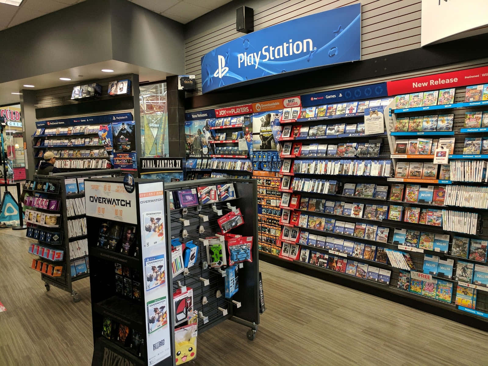

Tips for collecting vidoe games

Video games can be obtained through various means. They can either be purchased digitally or physically. Digital storefronts are usually contained within the console and can be purchased with either the systems gift cards or via your credit card. Physical games can be purchased in retail stores or at specialized video game stores like the one shown in the image.
Some important tips for collecting video games are,
- Check the condition of the item you're purchasing and inspect for any possibility that it might be damaged.
- Use websites like eBay or other video game price charting services to check the price of games to ensure you aren't getting scammed.
- Go to places like thrift stores, flea markets, or garage sales for possible deals.
- Wishlist or save certain titles you would want and keep an eye for when they go on sale.
- Make sure to have enough space and room for all the items you may acquire when collecting.
Use this link to return to the main page.
Return home